Tài liệu và kết quả
Notebook thực nghiệm và các tệp kết quả được xuất trong quá trình EDA, Data Preprocessing, Model Training và Evaluation.
Notebook
Notebook chứa toàn bộ quy trình phân tích dữ liệu, tiền xử lý, huấn luyện và đánh giá năm mô hình.
PDF report
Báo cáo chi tiết của bài tập lớn.
YouTube
Video giới thiệu và trình bày kết quả bài tập lớn.
Mô tả tập dữ liệu
Nghiên cứu sử dụng Adult Census Income Dataset, được cung cấp bởi UCI Machine Learning Repository. Dataset chứa thông tin nhân khẩu học và nghề nghiệp của các cá nhân, phục vụ bài toán dự đoán nhóm thu nhập hằng năm.
- Nguồn dữ liệu
- UCI Machine Learning Repository — Adult ↗
- Số mẫu ban đầu
- 48.842
- Input Features
- 14 Features
- Numerical Features
- 6 Features
- Categorical / Binary Features
- 8 Features
- Target Variable
income- Target Classes
<=50Kvà>50K- Bài toán
- Binary Classification
1.1. Các đặc trưng đầu vào
Dataset bao gồm 14 Input Features, được chia thành hai nhóm Numerical và Categorical / Binary.
| Feature | Kiểu dữ liệu | Mô tả |
|---|---|---|
age |
Numerical | Độ tuổi của cá nhân. |
workclass |
Categorical | Loại hình hoặc khu vực làm việc. |
fnlwgt |
Numerical | Final sampling weight được gán cho cá nhân trong dữ liệu điều tra. |
education |
Categorical | Trình độ học vấn. |
education-num |
Numerical | Mã số biểu diễn trình độ học vấn. |
marital-status |
Categorical | Tình trạng hôn nhân. |
occupation |
Categorical | Nghề nghiệp của cá nhân. |
relationship |
Categorical | Mối quan hệ của cá nhân trong hộ gia đình. |
race |
Categorical | Nhóm chủng tộc. |
sex |
Binary | Giới tính của cá nhân. |
capital-gain |
Numerical | Khoản thu nhập từ lãi vốn. |
capital-loss |
Numerical | Khoản thua lỗ từ vốn. |
hours-per-week |
Numerical | Số giờ làm việc mỗi tuần. |
native-country |
Categorical | Quốc gia xuất thân của cá nhân. |
1.2. Biến mục tiêu
Target Variable là income, biểu thị nhóm thu nhập
hằng năm của một cá nhân. Đây là biến mục tiêu của bài toán
Binary Classification.
| Target Label | Ý nghĩa |
|---|---|
<=50K |
Thu nhập hằng năm nhỏ hơn hoặc bằng 50.000 USD. |
>50K |
Thu nhập hằng năm lớn hơn 50.000 USD. |
EDA Round 1 — Kiểm tra chất lượng dữ liệu
EDA Round 1 tập trung đánh giá chất lượng và tính hợp lệ của Dataset ban đầu. Các nội dung được khảo sát bao gồm Missing Values, Duplicate Records, giá trị không hợp lệ và tính nhất quán của Target Labels.
2.1. Missing Values Analysis
Trong Dataset gốc, các giá trị bị thiếu ở một số
Categorical Features được biểu diễn bằng ký tự đặc biệt
?. Các giá trị này được chuyển thành
NaN khi đọc dữ liệu để phục vụ quá trình
thống kê Missing Values.
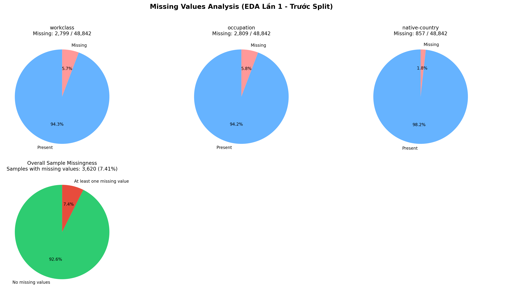
Có 3 Features chứa Missing Values:
occupation có 2.809 giá trị thiếu (5,75%),
workclass có 2.799 (5,73%) và
native-country có 857 (1,75%).
Tổng cộng có 3.620 quan sát (7,41%) chứa ít nhất
một giá trị thiếu.
| Feature | Missing Values | Tỷ lệ |
|---|---|---|
occupation |
2.809 | 5,75% |
workclass |
2.799 | 5,73% |
native-country |
857 | 1,75% |
| Tổng quan sát có Missing Values | 3.620 | 7,41% |
Phương pháp Complete-case Deletion được sử dụng để loại bỏ các quan sát chứa ít nhất một Missing Value. Cách tiếp cận này tạo ra Dataset hoàn chỉnh cho các bước thực nghiệm tiếp theo.
2.2. Duplicate Records Analysis
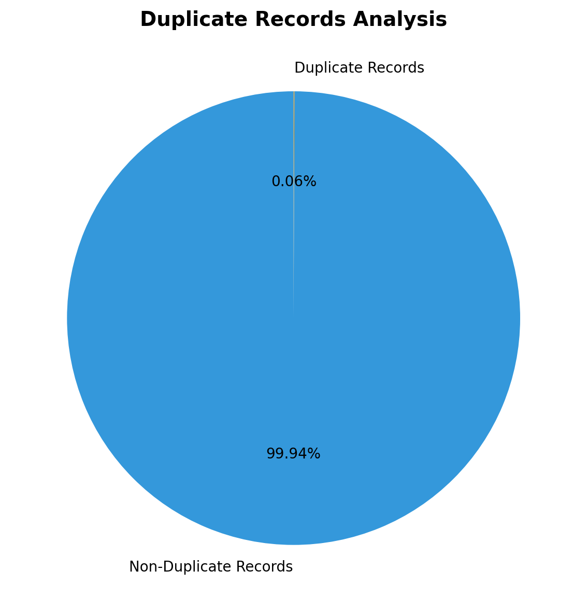
Dataset có 29 Duplicate Records trong tổng số 48.842 quan sát, chiếm khoảng 0,06%. Đây là kết quả kiểm tra các hàng trùng lặp hoàn toàn. Notebook thực hiện thống kê và trực quan hóa số lượng bản ghi trùng lặp.
2.3. Kiểm tra giá trị không hợp lệ
Sáu Numerical Features được kiểm tra nhằm phát hiện các giá trị âm không hợp lệ. Kết quả cho thấy không có giá trị âm trong các Features được khảo sát.
| Feature | Số giá trị không hợp lệ |
|---|---|
age | 0 |
fnlwgt | 0 |
education-num | 0 |
capital-gain | 0 |
capital-loss | 0 |
hours-per-week | 0 |
2.4. Chuẩn hóa Target Labels
Target Labels được chuẩn hóa để loại bỏ khoảng trắng ở đầu hoặc cuối chuỗi và dấu chấm ở cuối nhãn (nếu có). Điều này đảm bảo các nhãn có cùng ý nghĩa được biểu diễn thống nhất trước khi thực hiện các bước xử lý dữ liệu.
df["income"] = df["income"].str.strip().str.rstrip(".")
Sau bước chuẩn hóa, Target Variable có hai giá trị:
<=50K và >50K.
2.5. Xử lý Missing Values và kết quả làm sạch
Sau khi chuẩn hóa Target Labels, các quan sát có ít nhất một Missing Value được loại bỏ trên toàn bộ Dataset. Kết quả thu được như sau:
| Trạng thái dữ liệu | Số mẫu | Tỷ lệ |
|---|---|---|
| Ban đầu | 48.842 | 100% |
| Có ít nhất một Missing Value | 3.620 | 7,41% |
| Sau khi loại Missing Values | 45.222 | 92,59% |
Sau khi làm sạch, Dataset còn 45.222 quan sát hoàn chỉnh. Phân bố Target Classes trên Dataset này như sau:
| Income Class | Số quan sát | Tỷ lệ |
|---|---|---|
<=50K |
34.014 | 75,22% |
>50K |
11.208 | 24,78% |
Target Distribution cho thấy Dataset có hiện tượng Class Imbalance, với lớp ≤50K chiếm tỷ lệ lớn hơn đáng kể so với lớp >50K.
Chia tập dữ liệu
Sau khi hoàn tất EDA Round 1 và xử lý Missing Values, Dataset được chia thành Training Set, Validation Set và Test Set. Phương pháp Stratified Sampling được sử dụng nhằm duy trì tỷ lệ các Target Classes tương đối đồng nhất giữa ba tập.
Quá trình chia dữ liệu gồm hai bước: trước tiên tách
70% dữ liệu cho Training Set và 30% còn lại; sau đó
chia đều phần 30% thành Validation Set và Test Set.
Cả hai lần chia đều sử dụng stratify
và random_state=42.
| Split | Số mẫu | Tỷ lệ | ≤50K | >50K |
|---|---|---|---|---|
| Training | 31.655 | 70% | 23.809 | 7.846 |
| Validation | 6.783 | 15% | 5.102 | 1.681 |
| Test | 6.784 | 15% | 5.103 | 1.681 |
| Tổng | 45.222 | 100% | 34.014 | 11.208 |
Training Set được sử dụng cho EDA Round 2, Feature Selection, Data Preprocessing và Model Training. Validation Set được sử dụng để so sánh hiệu năng giữa các mô hình. Test Set được giữ riêng cho đánh giá cuối cùng.
Việc sử dụng Stratified Sampling giúp duy trì phân bố lớp gần tương đương giữa các tập, trong khi Test Set không tham gia vào quá trình học tham số của mô hình.
EDA Round 2 — Phân tích chuyên sâu
Sau khi chia tập dữ liệu, EDA Round 2 được thực hiện riêng trên Training Set. Giai đoạn này tập trung phân tích phân phối của các Features, mối quan hệ giữa Features và Target, Outliers và mức độ liên quan của từng Feature đối với bài toán dự đoán.
4.1. Phân phối Target Classes
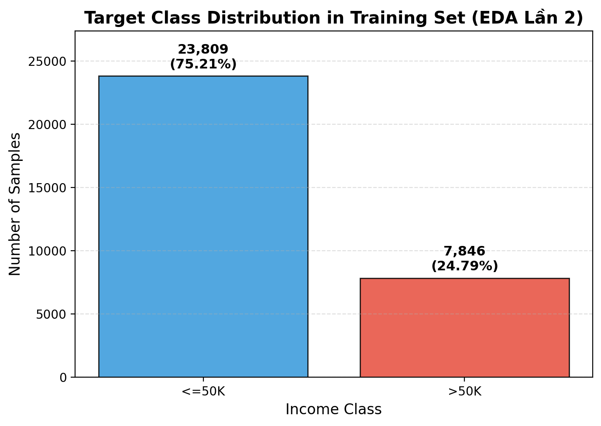
Training Set có 31.655 quan sát, trong đó lớp
<=50K gồm 23.809 mẫu (75,21%)
và lớp >50K gồm 7.846 mẫu (24,79%).
Imbalance Ratio giữa lớp đa số và lớp thiểu số
xấp xỉ 3,035:1.
Tỷ lệ mất cân bằng được xác định bằng:
Imbalance Ratio = 23,809 / 7,846 ≈ 3.035Sự chênh lệch về số lượng quan sát giữa hai lớp có thể khiến mô hình ưu tiên dự đoán lớp đa số. Vì vậy, các chiến lược xử lý Class Imbalance được xem xét trong giai đoạn Model Training.
4.2. Phân tích Numerical Features
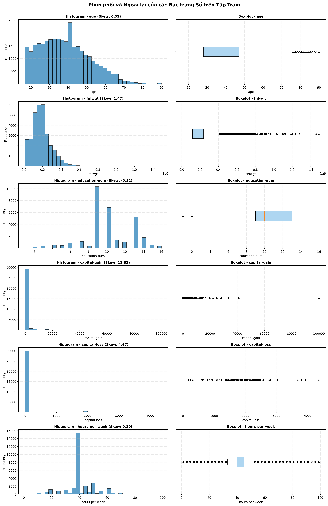
Histogram và boxplot được sử dụng để khảo sát phân phối, độ phân tán và các giá trị nằm xa vùng trung tâm của từng Numerical Feature.
| Feature | Mean | Median | Skewness |
|---|---|---|---|
age |
38,58 | 37 | 0,53 |
fnlwgt |
190.099,30 | 178.322 | 1,47 |
education-num |
10,12 | 10 | -0,32 |
capital-gain |
1.123,38 | 0 | 11,63 |
capital-loss |
89,79 | 0 | 4,47 |
hours-per-week |
40,94 | 40 | 0,30 |
Hai Features capital-gain và
capital-loss có phân phối lệch phải mạnh,
thể hiện qua Skewness lần lượt là 11,63 và 4,47.
Median của cả hai Feature đều bằng 0, cho thấy
phần lớn quan sát không ghi nhận Capital Gain
hoặc Capital Loss.
fnlwgt cũng có phân phối lệch phải,
trong khi age và
hours-per-week có phân phối ít lệch hơn.
4.3. Phân tích Categorical Features
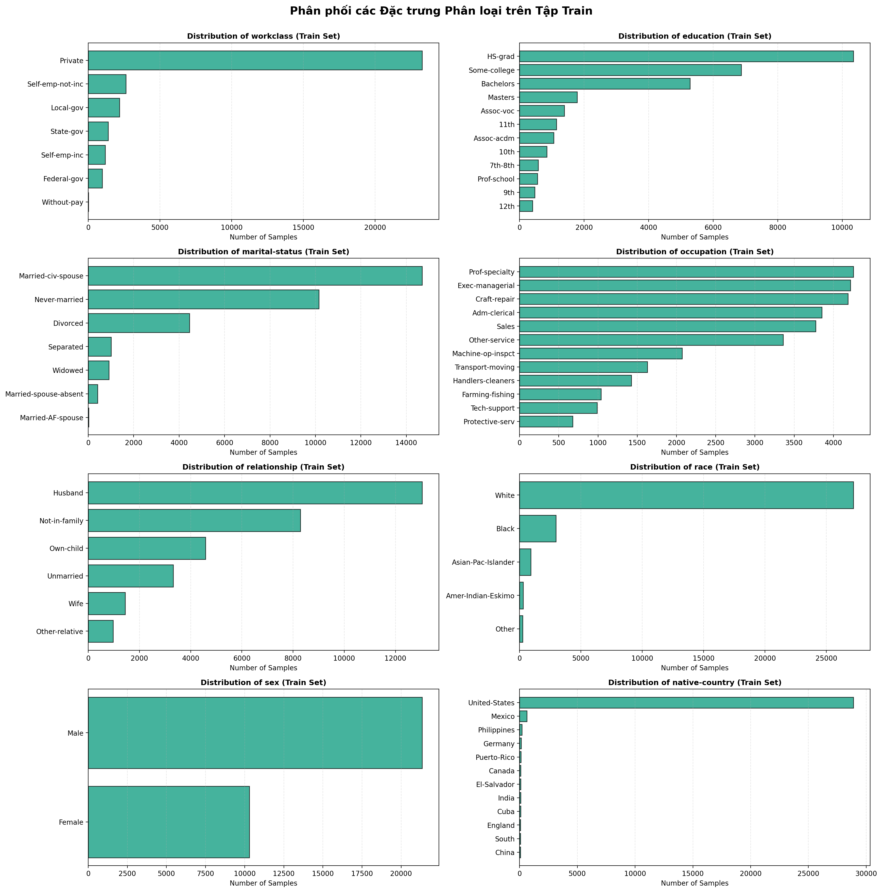
Các biểu đồ thể hiện tần suất xuất hiện của từng Category trong Training Set, giúp nhận diện các nhóm chiếm tỷ lệ lớn và mức độ đa dạng của từng Feature.
| Feature | Số Category | Category phổ biến nhất | Tỷ lệ |
|---|---|---|---|
workclass |
7 | Private | 73,54% |
education |
16 | HS-grad | 32,70% |
marital-status |
7 | Married-civ-spouse | 46,44% |
occupation |
14 | Prof-specialty | 13,45% |
relationship |
6 | Husband | 41,22% |
race |
5 | White | 86,00% |
sex |
2 | Male | 67,45% |
native-country |
41 | United-States | 91,31% |
4.4. Correlation Analysis
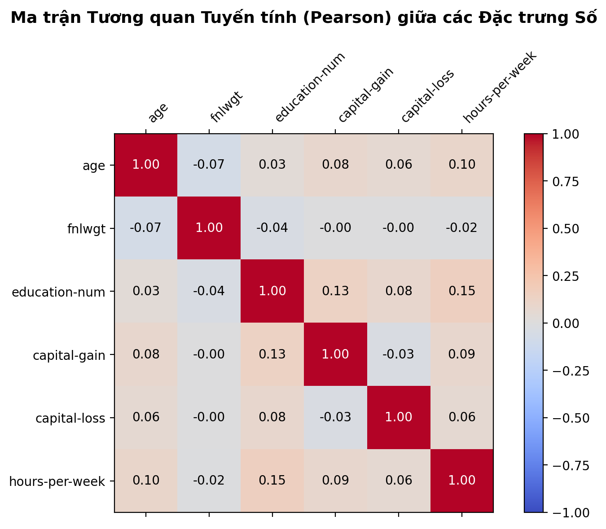
Correlation Matrix được sử dụng để khảo sát mức độ tương quan tuyến tính giữa các Numerical Features. Kết quả cung cấp thêm thông tin về mức độ liên hệ giữa các biến số trong Dataset.
4.5. Mối quan hệ giữa Features và Target
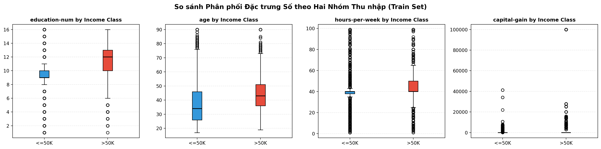
Các biểu đồ so sánh phân phối Numerical Features giữa hai nhóm thu nhập. Sự khác biệt trong phân phối cung cấp góc nhìn trực quan về khả năng phân biệt hai Target Classes của từng Feature.
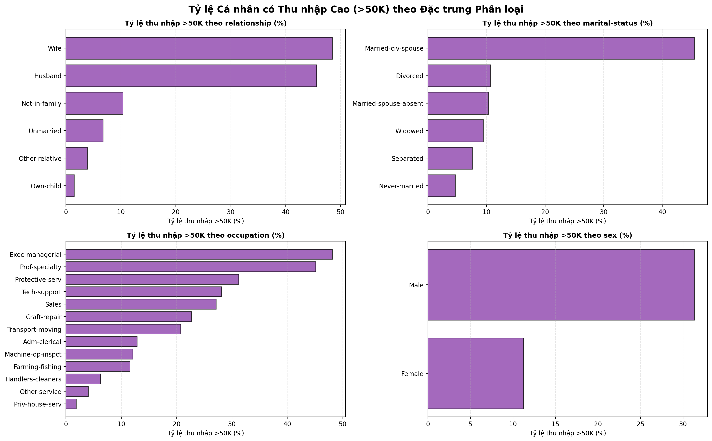
Các biểu đồ khảo sát tỷ lệ thu nhập >50K theo những Categorical Features. Những Category có ít hơn 50 quan sát được loại khỏi biểu đồ để hạn chế việc diễn giải các nhóm có kích thước mẫu quá nhỏ.
4.6. Outlier Analysis
Phương pháp Interquartile Range (IQR) với ngưỡng mở rộng 3 × IQR được sử dụng để phát hiện Outliers. Phân tích tập trung vào các Numerical Features phù hợp với phương pháp này.
Hai Features capital-gain và
capital-loss được loại khỏi phép kiểm tra
Outlier tự động do có phân phối Zero-inflated và
Skewness rất cao. Việc áp dụng trực tiếp ngưỡng IQR
có thể đánh dấu nhiều giá trị hợp lệ ở phần đuôi
của phân phối.
| Feature | Số Outliers | Tỷ lệ |
|---|---|---|
age |
0 | 0% |
fnlwgt |
149 | 0,471% |
education-num |
0 | 0% |
hours-per-week |
3.950 | 12,478% |
Khi xét hợp các quan sát bị đánh dấu bởi ít nhất một Feature, có tổng cộng 4.088 quan sát, tương đương khoảng 12,91% Training Set.
Theo quy tắc xử lý được sử dụng trong notebook, chỉ loại bỏ Outliers khi tỷ lệ tổng hợp nhỏ hơn 10%. Do tỷ lệ quan sát bị đánh dấu là 12,91%, các quan sát này được giữ lại. Training Set tiếp tục có 31.655 mẫu.
4.7. Feature Selection
Feature Selection được thực hiện dựa trên Mutual Information và việc kiểm tra tính dư thừa thông tin giữa các Features. Mutual Information đo lường mức độ phụ thuộc thống kê giữa một Feature và Target Variable.
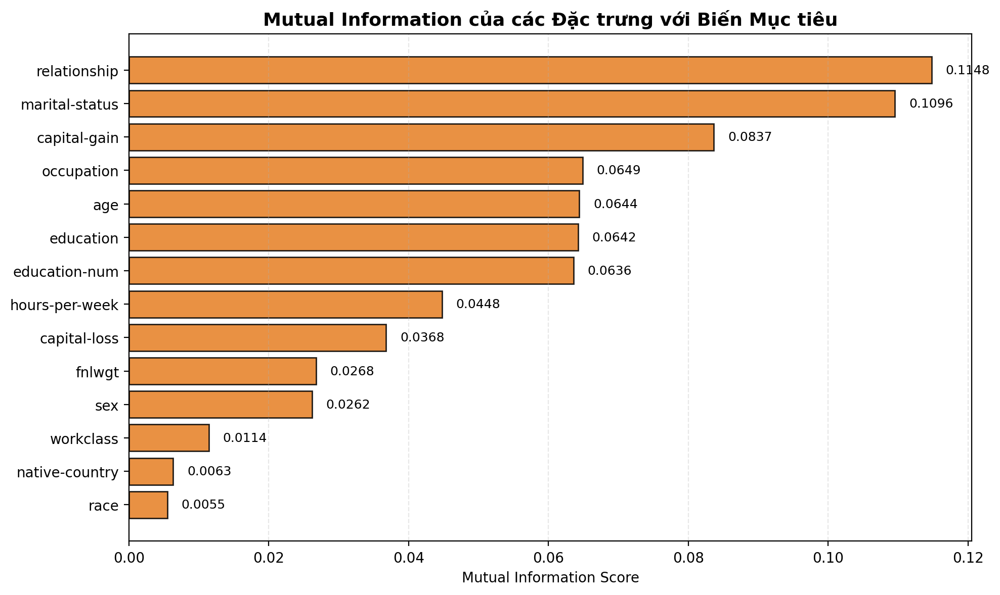
Các điểm số Mutual Information thể hiện mức độ liên quan thống kê giữa từng Feature và Target. Giá trị càng lớn cho thấy Feature cung cấp càng nhiều thông tin theo thước đo này.
| Feature | Mutual Information |
|---|---|
relationship | 0,1148 |
marital-status | 0,1096 |
capital-gain | 0,0837 |
occupation | 0,0649 |
age | 0,0644 |
education | 0,0642 |
education-num | 0,0636 |
hours-per-week | 0,0448 |
capital-loss | 0,0368 |
fnlwgt | 0,0268 |
sex | 0,0262 |
workclass | 0,0114 |
native-country | 0,0063 |
race | 0,0055 |
Ngưỡng Mutual Information được đặt ở mức 0,005. Không có Feature nào có điểm số thấp hơn ngưỡng này. Do đó, không loại bỏ Feature nào chỉ dựa trên tiêu chí Mutual Information.
Tuy nhiên, education và
education-num có quan hệ ánh xạ một-một
với 16 mức trình độ học vấn tương ứng.
Hai Features cùng biểu diễn một loại thông tin
dưới hai dạng dữ liệu khác nhau.
Vì vậy, education được loại bỏ
để tránh lưu giữ thông tin trùng lặp,
trong khi education-num được giữ lại.
Sau Feature Selection, Dataset còn lại 13 Input Features:
age,
workclass,
fnlwgt,
education-num,
marital-status,
occupation,
relationship,
race,
sex,
capital-gain,
capital-loss,
hours-per-week,
native-country.
Data Preprocessing
Sau Feature Selection, 13 Features còn lại được chuyển đổi sang dạng biểu diễn phù hợp với đầu vào của các thuật toán Machine Learning.
5.1. Phân nhóm Features
Các Features được chia thành hai nhóm:
-
Numerical Features (6):
age,fnlwgt,education-num,capital-gain,capital-lossvàhours-per-week. -
Categorical Features (7):
workclass,marital-status,occupation,relationship,race,sexvànative-country.
5.2. One-Hot Encoding
One-Hot Encoding được áp dụng cho 7 Categorical Features. Mỗi Category được chuyển thành một cột nhị phân riêng biệt, giúp mô hình tiếp nhận dữ liệu phân loại dưới dạng Numerical.
Encoder sử dụng handle_unknown="ignore"
để xử lý những Category xuất hiện trong Validation
hoặc Test Set nhưng không có trong Training Set.
Encoder chỉ được Fit trên Training Set. Sau đó, cùng Encoder được sử dụng để Transform Validation và Test Set.
Kết hợp 6 Numerical Features và các cột sinh ra từ One-Hot Encoding, mỗi quan sát có tổng cộng 88 chiều Features.
5.3. StandardScaler
StandardScaler được sử dụng để chuẩn hóa 6 Numerical Features. Phép biến đổi đưa các Features về cùng thang đo, hỗ trợ những thuật toán nhạy cảm với khoảng cách hoặc độ lớn của các giá trị đầu vào như KNN, SVM và MLP.
Công thức Standardization:
z = (x - mean_train) / std_trainTrong đó, Mean và Standard Deviation được tính từ Training Set. Scaler chỉ được Fit trên Training Set, sau đó sử dụng các tham số đã học để Transform Validation và Test Set.
Các Categorical Features sau One-Hot Encoding giữ nguyên giá trị nhị phân 0/1 và không được Standardize.
5.4. Target Encoding
Target Labels được chuyển thành dạng số để phục vụ quá trình huấn luyện mô hình:
| Target Label | Encoded Value |
|---|---|
<=50K |
0 |
>50K |
1 |
5.5. Feature Representation theo mô hình
Các mô hình sử dụng những dạng biểu diễn dữ liệu khác nhau tùy theo đặc điểm của thuật toán.
| Model | Feature Representation |
|---|---|
| KNN | One-Hot Encoding kết hợp Numerical Features đã Standardize. |
| Gaussian Naive Bayes | One-Hot Encoding kết hợp Numerical Features chưa Standardize. |
| SVM | One-Hot Encoding kết hợp Numerical Features đã Standardize. |
| XGBoost | One-Hot Encoding kết hợp Numerical Features chưa Standardize. |
| MLP | One-Hot Encoding kết hợp Numerical Features đã Standardize. |
Các phép biến đổi được Fit trên Training Set. Validation và Test Set chỉ được Transform bằng những tham số đã học, nhằm hạn chế Data Leakage.
Model Training và Evaluation
Năm thuật toán phân loại được triển khai và so sánh: K-Nearest Neighbors (KNN), Gaussian Naive Bayes, Support Vector Machine (SVM), XGBoost và Multi-Layer Perceptron (MLP).
6.1. Xử lý Class Imbalance
Training Set có Imbalance Ratio khoảng 3,035:1. Các chiến lược xử lý Class Imbalance được lựa chọn tùy theo khả năng hỗ trợ của từng thuật toán.
| Model | Chiến lược | Training Data |
|---|---|---|
| KNN | Random Oversampling | Training Set sau Oversampling |
| Gaussian Naive Bayes | Random Oversampling | Training Set sau Oversampling |
| SVM | class_weight={0:1.0, 1:3.035} |
Training Set ban đầu |
| XGBoost | scale_pos_weight=3.035 |
Training Set ban đầu |
| MLP | BCEWithLogitsLoss(pos_weight=3.035) |
Training Set ban đầu |
6.2. Random Oversampling
Random Oversampling được áp dụng cho KNN và Gaussian Naive Bayes. Các quan sát thuộc lớp thiểu số được lấy mẫu ngẫu nhiên có hoàn lại cho đến khi số lượng quan sát của hai lớp bằng nhau.
| Class | Trước Oversampling | Sau Oversampling |
|---|---|---|
<=50K |
23.809 | 23.809 |
>50K |
7.846 | 23.809 |
| Tổng cộng | 31.655 | 47.618 |
Random Oversampling chỉ được thực hiện trên Training Set. Validation và Test Set giữ nguyên phân phối lớp ban đầu để phản ánh hiệu năng mô hình trên dữ liệu có phân phối tự nhiên.
6.3. Cấu hình các mô hình
K-Nearest Neighbors (KNN)
| Parameter | Value |
|---|---|
n_neighbors | 7 |
weights | distance |
| Metric | Minkowski |
p | 2 |
n_jobs | -1 |
KNN sử dụng Euclidean Distance để xác định các
quan sát lân cận. Tham số weights="distance"
giúp các quan sát gần hơn có ảnh hưởng lớn hơn
trong quá trình dự đoán.
Gaussian Naive Bayes
Gaussian Naive Bayes được triển khai với cấu hình mặc định
GaussianNB(). Mô hình sử dụng dữ liệu
One-Hot Encoded chưa Standardize và Training Set
sau Random Oversampling.
Support Vector Machine (SVM)
| Parameter | Value |
|---|---|
| Kernel | RBF |
C | 1 |
gamma | scale |
class_weight | {0:1.0, 1:3.035} |
probability | True |
random_state | 42 |
SVM sử dụng RBF Kernel để mô hình hóa các ranh giới phân lớp phi tuyến. Class Weight tăng mức phạt đối với lỗi phân loại ở lớp thiểu số.
XGBoost
| Parameter | Value |
|---|---|
objective | binary:logistic |
eval_metric | logloss |
n_estimators | 300 |
learning_rate | 0.05 |
max_depth | 6 |
subsample | 0.8 |
colsample_bytree | 0.8 |
scale_pos_weight | 3.035 |
random_state | 42 |
tree_method | hist |
XGBoost sử dụng Gradient Boosting trên Decision Trees.
Các tham số như max_depth,
subsample và colsample_bytree
giúp kiểm soát độ phức tạp của mô hình và tỷ lệ lấy mẫu
trong quá trình huấn luyện.
Multi-Layer Perceptron (MLP)
MLP được xây dựng với hai Hidden Layers và một Output Layer phục vụ bài toán Binary Classification.
Kiến trúc: Input (88) → Linear (256) → ReLU → Dropout (0.2) → Linear (128) → ReLU → Dropout (0.2) → Linear (1).
| Parameter | Value |
|---|---|
| Optimizer | Adam |
| Learning rate | 0.001 |
| Weight decay | 0.0001 |
| Batch size | 256 |
| Maximum epochs | 50 |
| Early Stopping patience | 5 |
| Loss function | BCEWithLogitsLoss |
| Positive class weight | 3.035 |
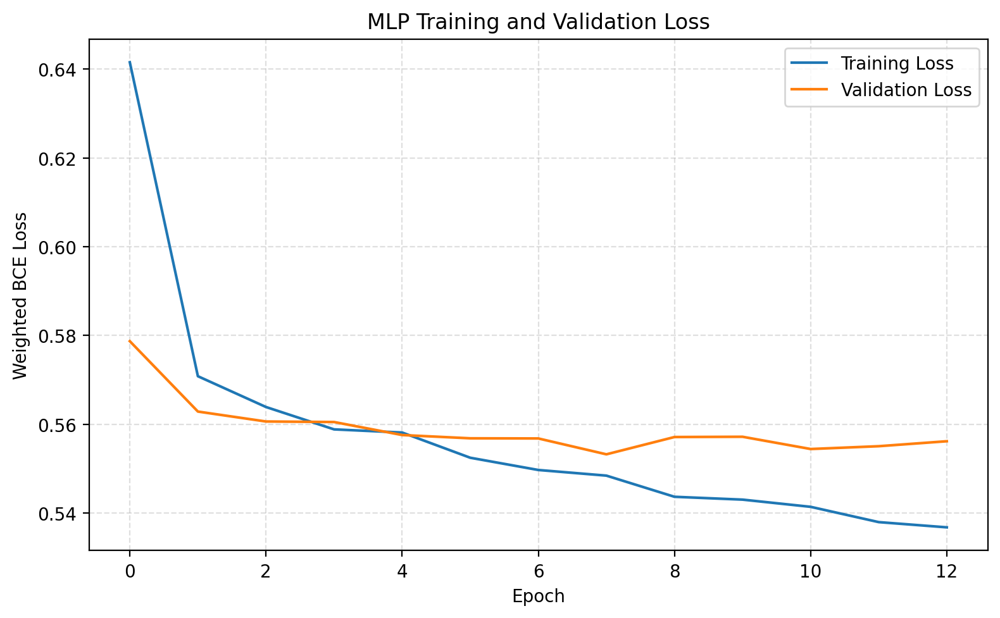
Early Stopping được sử dụng để theo dõi quá trình huấn luyện và hạn chế Overfitting. Quá trình huấn luyện dừng tại Epoch 10 và trạng thái mô hình tốt nhất được khôi phục trước khi đánh giá.
6.4. Evaluation Metrics
Các mô hình được đánh giá bằng năm chỉ số:
Accuracy, Precision, Recall, F1-score và ROC-AUC.
Precision, Recall và F1-score được tính cho lớp dương
>50K.
| Metric | Ý nghĩa |
|---|---|
| Accuracy | Tỷ lệ dự đoán đúng trên tổng số quan sát. |
| Precision | Tỷ lệ dự đoán đúng trong số các quan sát được dự đoán thuộc lớp >50K. |
| Recall | Tỷ lệ nhận diện đúng các quan sát thực sự thuộc lớp >50K. |
| F1-score | Trung bình điều hòa giữa Precision và Recall. |
| ROC-AUC | Đánh giá khả năng phân biệt hai lớp dựa trên các ngưỡng phân loại khác nhau. |
6.5. Kết quả trên Validation Set
Cả năm mô hình được đánh giá trên cùng Validation Set gồm 6.783 quan sát. Validation Set giữ nguyên phân phối Target Classes ban đầu.
| Model | Accuracy | Precision | Recall | F1-score | ROC-AUC |
|---|---|---|---|---|---|
| KNN | 0,7836 | 0,5447 | 0,7722 | 0,6388 | 0,8541 |
| Gaussian NB | 0,7843 | 0,6369 | 0,3016 | 0,4094 | 0,8337 |
| SVM | 0,8079 | 0,5752 | 0,8596 | 0,6892 | 0,9032 |
| XGBoost | 0,8322 | 0,6155 | 0,8608 | 0,7178 | 0,9270 |
| MLP | 0,8072 | 0,5738 | 0,8626 | 0,6892 | 0,9123 |
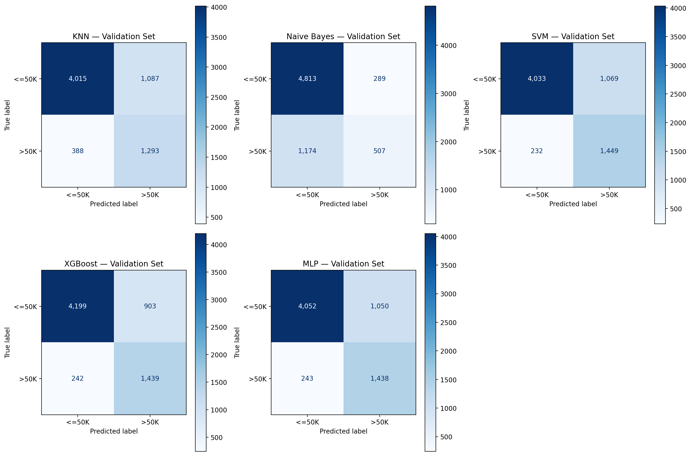
Các Confusion Matrices thể hiện số lượng dự đoán đúng và các trường hợp phân loại nhầm của từng mô hình trên cùng Validation Set.
XGBoost đạt Accuracy cao nhất (0,8322), F1-score cao nhất (0,7178) và ROC-AUC cao nhất (0,9270). MLP đạt Recall cao nhất (0,8626), nhỉnh hơn XGBoost (0,8608).
Gaussian Naive Bayes có Precision tương đối cao (0,6369) nhưng Recall chỉ đạt 0,3016, cho thấy mô hình bỏ sót một tỷ lệ lớn các quan sát thực sự thuộc lớp thu nhập cao.
6.6. Kết quả cuối cùng trên Test Set
Sau khi so sánh trên Validation Set, cả năm mô hình được đánh giá trên Test Set độc lập gồm 6.784 quan sát. Test Set không được sử dụng trong quá trình huấn luyện hoặc Oversampling.
| Model | Accuracy | Precision | Recall | F1-score | ROC-AUC |
|---|---|---|---|---|---|
| KNN | 0,7833 | 0,5443 | 0,7710 | 0,6381 | 0,8579 |
| Gaussian NB | 0,7824 | 0,6296 | 0,2963 | 0,4029 | 0,8280 |
| SVM | 0,8025 | 0,5661 | 0,8691 | 0,6856 | 0,8997 |
| XGBoost | 0,8302 | 0,6111 | 0,8656 | 0,7164 | 0,9265 |
| MLP | 0,8056 | 0,5708 | 0,8679 | 0,6887 | 0,9093 |
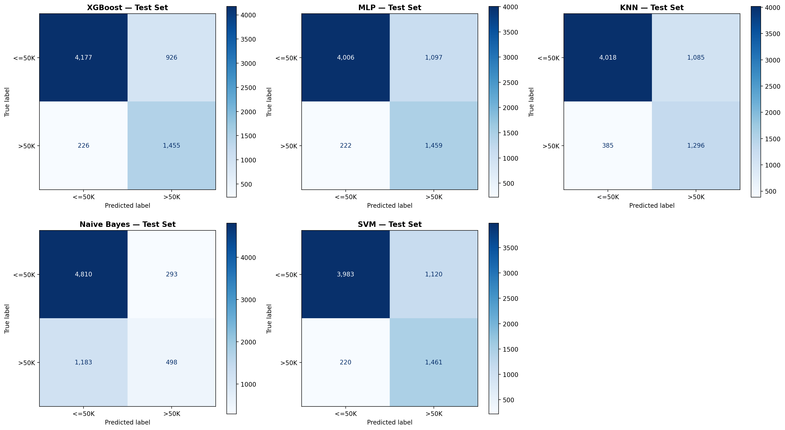
Các Confusion Matrices thể hiện khả năng phân loại hai Income Classes của năm mô hình trên dữ liệu chưa được sử dụng trong quá trình huấn luyện.
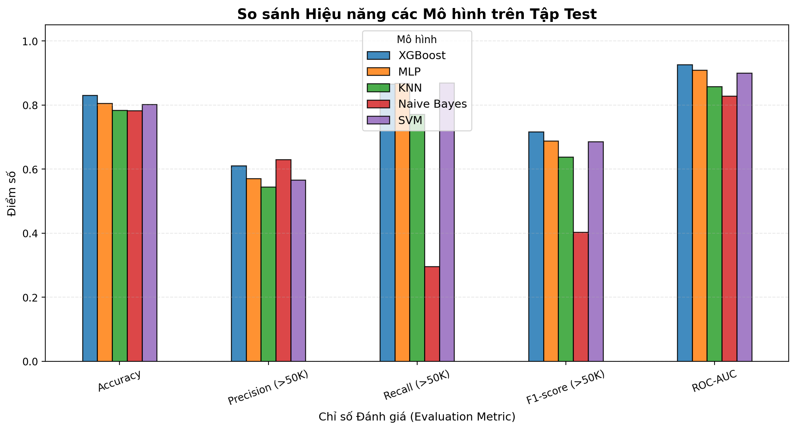
Biểu đồ tổng hợp kết quả của năm mô hình trên các Evaluation Metrics, hỗ trợ so sánh hiệu năng tổng thể và khả năng nhận diện lớp thu nhập cao.
6.7. Nhận xét kết quả Test
XGBoost đạt hiệu năng tổng thể tốt nhất trong lần thực nghiệm: Accuracy đạt 0,8302, F1-score đạt 0,7164 và ROC-AUC đạt 0,9265. Các kết quả này cho thấy XGBoost có khả năng phân loại và phân biệt hai Income Classes tốt nhất trong số năm mô hình được thử nghiệm.
SVM đạt Recall cao nhất (0,8691), theo sau là MLP (0,8679) và XGBoost (0,8656). Điều này cho thấy ba mô hình đều nhận diện được tỷ lệ tương đối cao các quan sát thực sự thuộc lớp thu nhập trên 50.000 USD.
Gaussian Naive Bayes có Precision tương đối cao (0,6296) nhưng Recall chỉ đạt 0,2963. Mô hình có xu hướng dự đoán lớp dương tính khá thận trọng: các dự đoán dương tính có độ chính xác tương đối tốt, nhưng bỏ sót nhiều quan sát thực sự thuộc lớp >50K.
Nhìn chung, XGBoost có sự cân bằng tốt nhất giữa Accuracy, Precision, Recall và F1-score trong phạm vi thực nghiệm này. Trong trường hợp ưu tiên tối đa khả năng nhận diện lớp thu nhập cao, SVM là một lựa chọn đáng cân nhắc do đạt Recall cao nhất.
Tổng kết
Thực nghiệm đã triển khai quy trình Machine Learning cho bài toán phân loại thu nhập cá nhân trên Adult Census Income Dataset. Quy trình bao gồm kiểm tra chất lượng dữ liệu, chia tập dữ liệu, EDA chuyên sâu, Feature Selection, Data Preprocessing, xử lý Class Imbalance, Model Training và Evaluation.
Dataset ban đầu có 48.842 quan sát và 14 Input Features. Sau khi chuẩn hóa Target Labels và xử lý Missing Values, còn lại 45.222 quan sát hoàn chỉnh. Dữ liệu được chia thành Training, Validation và Test Set theo tỷ lệ 70:15:15.
EDA Round 2 được thực hiện trên Training Set.
Sau khi phân tích phân phối dữ liệu, Outliers,
Mutual Information và mối quan hệ giữa các Features,
education được loại bỏ do có thông tin
trùng lặp với education-num.
Tổng cộng 13 Features được giữ lại cho quá trình
Data Preprocessing và Model Training.
Năm mô hình được triển khai và đánh giá trên cùng Validation Set và Test Set. Các chiến lược xử lý Class Imbalance được lựa chọn phù hợp với từng thuật toán, trong khi Validation và Test Set vẫn giữ nguyên phân phối lớp ban đầu.
Trên Test Set, XGBoost đạt Accuracy 0,8302, F1-score 0,7164 và ROC-AUC 0,9265, cao nhất trong năm mô hình. SVM đạt Recall cao nhất với giá trị 0,8691.
Vì vậy, XGBoost là mô hình có hiệu năng tổng thể tốt nhất trong phạm vi thực nghiệm này. Tuy nhiên, khi mục tiêu ưu tiên là giảm số lượng quan sát thuộc lớp thu nhập cao bị bỏ sót, SVM cũng là một lựa chọn đáng cân nhắc.
Một hướng mở rộng có thể khảo sát là điều chỉnh Decision Threshold và phân tích Precision–Recall Trade-off trên Validation Set. Đây là đề xuất cho các thực nghiệm tiếp theo.